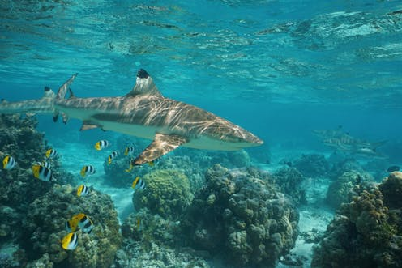
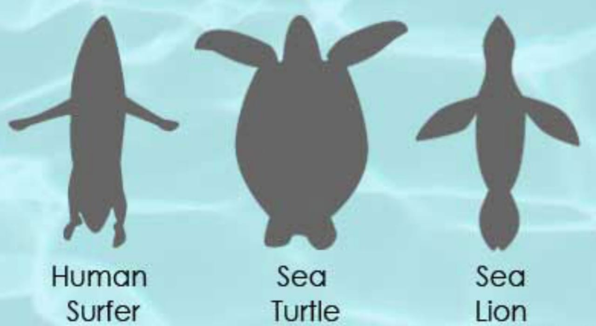
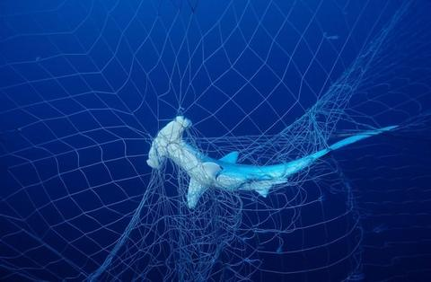
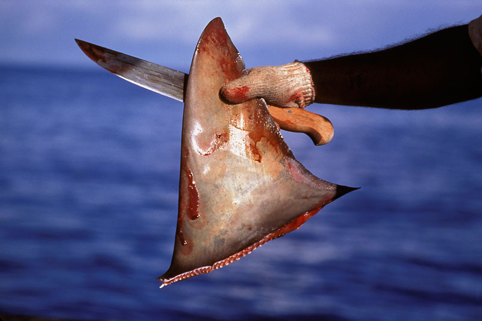
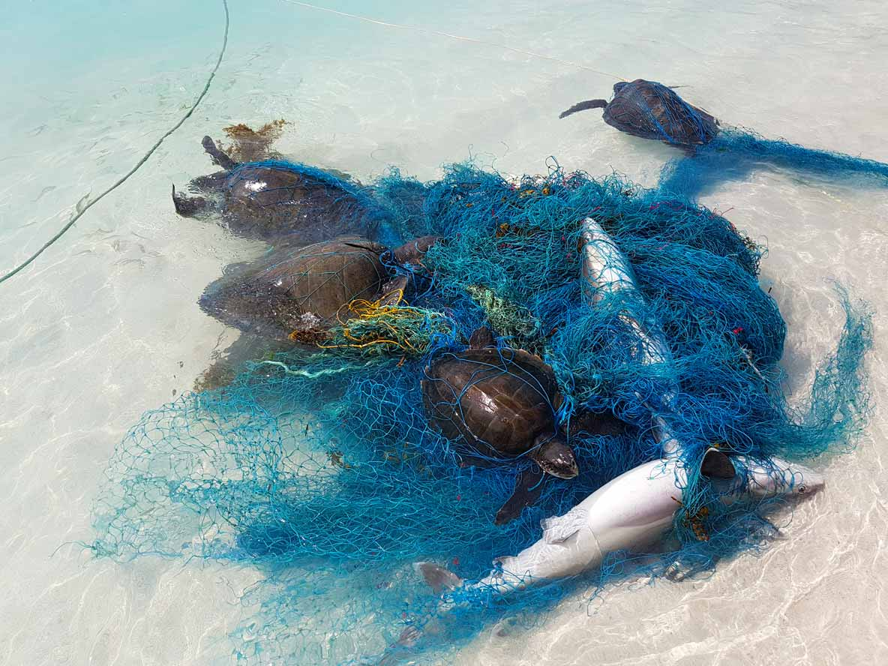
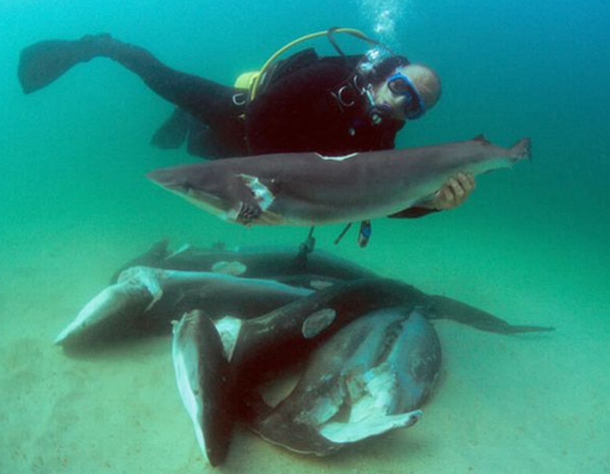

Sharks
The importance of sharks in our ecosystem
Sharks are beneficial for us in many ways. We fail to see their importance as we often see them as apex predators. People often think
sharks are human eaters because of the way movies protray sharks. This is however untrue, sharks do not like the taste of people.

Why do sharks attack people?
- Sharks attack people because it mistakes us for something it usually eats.
- Sharks attack blindly and they have weak eyesight, they sense food by vibrations and smell.
- However they do not have any limbs to feel what it is they are attacking so it takes a bite and swims away once it realises it is a
human.
- Humans do not provide enough high-fat meat for sharks.
- Sharks are territorial.

There are two types of attacks in a sharks point of view:
Provoked attacks
This is when humans touch the shark or pokes it or teases the shark, this aggrevates the shark.
- Sharks are aggressive animals and are easily aggitated.
- All incidents when a shark is captured is most often provoked attacks.
- Sometimes surfers accidentally hit sharks with their surf boards which results in provoked attacks.
Unprovoked attacks
Initiated by a shark.
- Hit-and-run attack- Most victims do not see the oncoming shark. The sharks usually bites the victim then leaves. This is
the most common attack and is usually non-fatal.
- Sneak attack- A rare attack, victims do not usually see the shark. This attack is predatory and the victim will sustain
deep bites.
- Bump-and-bite attack- Can be severe or fatal and is not uncommon. The sharks circle and bites the victims, this is called a
test bite. Panicing and thrashing around may lead the shark to believe it is prey. Great whites are known to do this on
occasion.
Why are sharks important?
- Predation is one of the most common ways sharks affect marine organisms. Sharks control the biomass of marine life as they are
apex predators. If we remove sharks from our oceans we are destroying our oceans.
- The removal of sharks will result in the increase of algae which smothers our corals. This results in many habitats being
destroyed as tropical fish will no longer have a habitat. If they do not have the habitat they need this will result in
the extinction of their kind.
- Sharks eat efficiently, they eat the old, weak or slower prey.
- Eating this way ensures a healthier population.
- Predation is not the only way sharks affect marine organisms, the very presence of sharks can affect the movements,
behaviour and even the reproductive abilities of other marine organisms. This is because the marine organisms have
to be vigilant to avoid being eaten. For a fish, being around a shark is stressful.
- This stress can wear on a fish which potentially influences its ability to bear healthy offspring.
- The presence of a shark would drive fish into areas they would not usually congregate which increases their survival
instincts.
How do we affect sharks?
Plastic Pollution
- We are killing our animals everyday.
- Plastic is ending up in our oceans and our animals are mistaking it for food.
- Animals as big as a whale are even dying from plastic.
- Sharks and many other animals are being caught in nets that we left in the oceans, these nets are called ghost nets.
Shark Finning
- Shark finning is the process of removing the fins of a shark and discarding the animal back into the ocean.
- The shark is often alive when it is discarded back into the ocean.
- It either suffocates to death or other animals eat it.
- Shark fins are used to make shark fin soup for cultural value.
- It is not important for human survival and is not a need but a want.
 
 